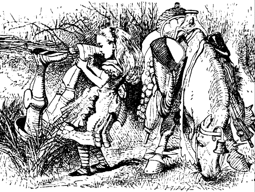
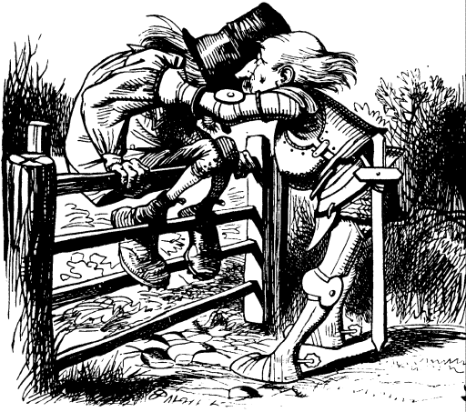
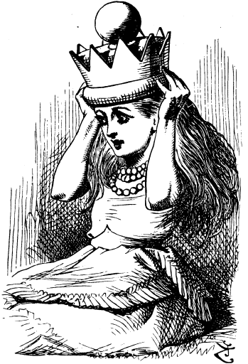
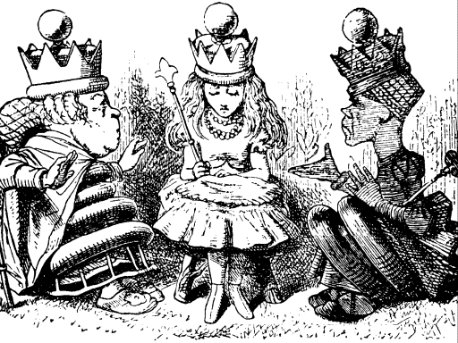
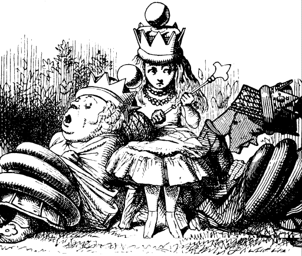

"WELL, this is grand!" said Alice. "I never expected I should be a Queen so soon--and I'll tell you what it is, your Majesty," she went on in a severe tone (she was always rather fond of scolding hersef), "it'll never do to loll about on the grass like that! Queens have to be dignified, you know"
So she got up and walked about--rather stiffly just at first, as she was afraid that the crown might come off: but she comforted herself with the thought that there was nobody to see her, "and if I really am a Queen," she said as she sat down again, "I shall be able to manage it quite well in time."
Everything was happening so oddly that she didn't feel a bit surprised at finding the Red Queen and the White Queen sitting close to her, one on each side: she would have liked very much to ask them how they came there, but she feared it would not be quite civil. However, there would be no harm, she thought, in asking if the game was over. "Please, would you tell me---" she began, looking timidly at the Red Queen.
"Speak when you're spoken to!" the Red Queen sharply interrupted her.
"But if everybody obeyed that rule," said Alice, who was always ready for a little argument, "and if you only spoke when you were spoken to, and the other person always waited for you to begin, you see nobody would ever say anything, so that---"
"Ridiculous!" cried the Queen. "Why, don't you see, child---" here she broke off with a frown, and after thinking for a minute, suddenly changed the subject of the conversation. "What do you mean by 'If you really are a Queen'? What right have you to call yourself so? You can't be a Queen, you know, till you've passed the proper examination. And the sooner we begin it, the better."
"I only said `if'!" poor Alice pleaded in a piteous tone.
The two Queens looked at each other, and the Red Queen remarked, with a little shudder, "She says she only said 'if'---"
"But she said a great deal more than that!" the White Queen moaned, wringing her hands. "Oh, ever so much more than that!"
"So you did, you know," the Red Queen said to Alice. "Always speak the truth--think before you speak--and write it down afterwards."
"I'm sure I didn't mean---" Alice was beginning, but the Red Queen interrupted.
"That's just what I complain of! You should have meant! What do you suppose is the use of a child without any meaning? Even a joke should have some meaning--and a chiId's more important than a joke, I hope. You couldn't deny that, even if you tried with both hands."
"I don't deny things with my hands," Alice objected.
"Nobody said you did," said the Red Queen, "I said you couldn't if you tried."
"She's in that state of mind," said the White Queen, "that she wants to deny something--only she doesn't know what to deny!"
"A nasty, vicious temper," the Red Queen remarked; and then there was an uncomfortable silence for a minute or two.
The Red Queen broke the silence by saying to the White Queen, "I invite you to Alice's dinner-party this afternoon."
The White Queen smiled feebly, and said, "And I invite you."
"I didn't know I was to have a party at all," said Alice; "but if there is to be one, I think I ought to invite the guests."
"We gave you the opportunity of doing it," the Red Queen remarked: "but I daresay you've not had many lessons in manners yet?"
"Manners are not taught in lessons," said Alice. "Lessons teach you to do sums, and things of that sort."
"Can you do Addition?" the White Queen asked. "What's one and one and one and one and one and one and one and one and one and one?"
"I don't know," said Alice. "I lost count." "She can't do Addition," the Red Queen interrupted. "Can you do Subtraction? Take nine from eight."
"Nine from eight I can't, you know," Alice replied very readily: "but---"
"She can't do Subtraction," said the White Queen. "Can you do Division? Divide a loaf by a knife--what's the answer to that?"
"I suppose---" Alice was beginning, but the Red Queen answered for her. "Bread-and-butter, of course. Try another Subtraction sum. Take a bone from a dog. What remains?"
Alice considered. "The bone wouldn't remain, of course, if I took it--and the dog wouldn't remain; it would come to bite me--and I'm sure I shouldn't remain!"
"Then you think nothing would remain?" said the Red Queen.
"I think that's the answer."
"Wrong, as usual," said the Red Queen; "the dog's temper would remain."
"But I don't see how---"
"Why, look here!" the Red Queen cried. "The dog would lose its temper, wouldn't it?"
"Perhaps it would," Alice replied cautiously.
"Then if the dog went away, its temper would remain!" the Queen exclaimed.

Alice said, as gravely as she could, "They might go different ways." But she couldn't help thinking to herself, "What dreadful nonsense we are talking!"
"She can't do sums a bit!" the Queens said together, with great emphasis.
"Can you do sums?" Alice said, turning suddenly on the White Queen, for she didn't like being found fault with so much.
The Queen gasped and shut her eyes. "I can do Addition," she said, "if you give me time-- but I can't do Subtraction under any circumstances!"
"Of course you know your A B C?" said the Red Queen.
"To be sure I do," said Alice.
"So do I," the White Queen whispered. "We'll often say it over together, dear. And I'll tell you a secret--I can read words of one letter! Isn't that grand? However, don't be discouraged. You'll come to it in time."
Here the Red Queen began again. "Can you answer useful questions?" she said. "How is bread made?"
"I know that!" Alice cried eagerly. "You take some flour---"
"Where do you pick the flower?" the White Queen asked. "In a garden, or in the hedges?"
"Well, it isn't picked at all," Alice explained: "it's ground---"
"How many acres of ground?" said the White Queen. "You mustn't leave out so many things."
"Fan her head!" the Red Queen anxiously interupted. "She'll be feverish after so much thinking." So they set to work and fanned her with bunches of leaves, till she had to beg them to leave off, it blew her hair about so.
"She's all right again now," said the Red Queen. "Do you know Languages? What's the French for fiddle-de-dee?"
"Fiddle-de-dee's not English," Alice replied gravely.
"Who said it was?" said the Red Queen.
Alice thought she saw a way out of the difficulty this time. "If you'll tell me what language " fiddle-de-dee' is, I'll tell you the French for it!" she exclaimed triumphantly.
But the Red Queen drew herself up rather stiffly, and said, "Queens never make bargains."
"I wish Queens never asked questions," Alice thought to herself.
"Don't let us quarrel," the White Queen said in an anxious tone. "What is the cause of lightning ?"
"The cause of lightning," Alice said very decidedly, for she felt quite sure about this, "is the thunder--no, no!" she hastily corrected herself. "I meant the other way."
"It's too late to correct it," said the Red Queen: "when you've once said a thing, that fixes it, and you must take the consequences."
"Which reminds me--" the White Queen said, looking down and nervously clasping and unclasping'her hands, "we had such a thunderstorm last Tuesday--I mean one of the last set of Tuesdays, you know."
Alice was puzzled. "In our country," Alice remarked, "there's only one day at a time."
The Red Queen said. "That's a poor thin way of doing things. Now here, we mostly have days and nights two or three at a time, and sometimes in the winter we take as many as five'nights together--for warmth, you know."
"Are five nights warmer than one night, then?" Alice ventured to ask.
"Five times as warm, of course."
"But they should be five times as cold, by the same rule---"
"Just so!" cried the Red Queen. "Five times as warm, and five times as cold--just as I'm five times as rich as you are, and five times as clever!"
Alice sighed and gave it up. "It's exactly like a riddle with no answer!" she thought.
"Humpty Dumpty saw it too," the White Queen went on in a low voice, more as if she were talking to herself. "He came to the door with a corkscrew in his hand---"
"What did he want?" said the Red Queen.
"He said he would come in," the White Queen went on, "because he was looking for a hippopotamus. Now, as it happened, there wasn't such a thing in the house, that morning."
"Is there generally?" Alice asked in an astonished tone.
"Well, only on Thursdays," said the Queen.
"I know what he came for," said Alice: "he wanted to punish the fish, because---"
Here the White Queen began again. "It was such a thunderstorm, you can't think!" ("She never could, you know," said the Red Queen.) "And part of the roof came off, and ever so much thunder got in--and it went rolling round the room in great lumps--and knocking over the tables and thing-- still I was so frightened, I couldn't remember my own name!"
Alice thought to herself, "I never should try to remember my name in the middle of an accident! Where would be the use of it?" But she did not say this aloud, for fear of hurting the poor Queen's feelings.
"Your Majesty must excuse her," the Red Queen said to Alice, taking one of the White Queen's hands in her own, and gently stroking it: "she means well, but she can't help saying foolish things, as a general rule."
The White Queen looked timidly at Alice, who felt she ought to say something kind, but really couldn't think of anything.
"She never was really well brought up," the Red Queen went on: "but it's amazing how good-tempered she is! Pat her on the head, and see how pleased she'll be!" But this was more than Alice had courage to do.
"A little kindness--and putting her hair in papers --would do wonders with her---"
The White Queen gave a deep sigh, and laid her head on Alice's shoulder. "I am so sleepy!" she moaned.

"She's tired, poor thing!" said the Red Queen "Smooth her hair--lend her your nightcap--and sing her a soothing lullaby."
"I haven't got a nightcap with me," said Alice, as she tried to obey the first direction: "and I don't know any soothing lullabies."
"I must do it myself, then," said the Red Queen, and she began:---
Hush-a-by lady, in Alice's lap! Till the feast's ready, we've time for a nap: Till the feast's over, we'll go to the ball-- Red Queen, and White Queen, and Alice, and all!
"And now you know the words," she added, as she put her head down on Alice's other shoulder, "just sing it through to me. I'm getting sleepy too." In another moment both Queens were fast asleep, and snoring loud.
"What am I to do?" exclaimed Alice, looking about in great perplexity, as first one round head, and then the other, rolled down from her shoulder, and lay like a heavy lump in her lap. "I don't think it ever happened before, that anyone had to take "care of two Queens asleep at once! No, not in all the History of England--it couldn't, you know, because there never was more than one Queen at a time. Do wake up, you heavy things!" she went on in an impatient tone; but there was no answer but a gentle snoring.
The snoring got more distinct every minute, and sounded more like a tune: at last she could even make out words, and she listened so eagerly that when the two great heads suddenly vanished from her lap, she hardly missed them.
She was standing before an arched doorway, over which were the words QUEEN ALICE in large letters, and on each side of it there was a bellhandle; one marked "Visitors' Bell," and the other "Servants' Bell."
"I'll wait till the song's over," thought Alice, "and then I'll ring the--the--which bell must ring?" she went on, very much puzzled by the names. "I'm not a visitor, and I'm not a servant. There ought to be one marked "Queen,' you know---"
Just then the door opened a little way, and a creature with a long beak put its head out for a moment and said, "No admittance till the week after next!" and shut the door again with a bang.
Alice knocked and rang in vain for a long time, but at last a very old Frog, who was sitting under a tree, got up, and hobbled slowly towards her: he was dressed in bright yellow, and had enormous boots on.

"What is it now?" the Frog said in a deep hoarse whisper.
Alice turned round, ready to find fault with anybody. "Where's the servant whose business it is to answer the door?" she began.
"Which door?" said the Frog.
Alice almost stamped with irritation at the slow drawl in which he spoke. "This door, of course!
The Frog looked at the door with his large dull eyes for a minute: then he went nearer and rubbed it with his thumb, as if he were trying whether the paint would come off; then he looked at Alice.
"To answer the door?" he said. "What's it been asking of?" He was so hoarse that Alice could scarcely hear him.
"I don't know what you mean," she said.
"I speaks English, doesn't I?" the Frog went on. "Or are you deaf? What did it ask you?"
"Nothing!" Alice said impatiently. "I've been knocking at it!"
"Shouldn't do that--shouldn't do that--" the Frog muttered. "Wexes it, you know." Then he went up and gave the door a kick with one off his great feet. "You let it alone," he panted out, as he hobbled back to his tree, "and it'll let you alone, you know."
At this moment the door was flung open, and a shrill voice was heard singing:---
To the Looking-glass world it was Alice that said, `I've a sceptre in hand, I've a crown on my head; Let the Looking-glass creatures, whatever they be, Come and dine with the Red Queen, the White Queen, and me'.
And hundreds of voices joined in the chorus:---
Then fill up the glasses as quick as you can, And sprinkle the table with buttons and bran: Put cats in the coffee, and mice in the tea-- And welcome Queen Alice with thirty-times-three!
Then followed a confused noise of cheering, and Alice thought to herself, "Thirty times three makes ninety. I wonder if anyone's counting?" In a minute there was silence again, and the same shrill voice, sang another verse:---
`O Looking-glass creatures,' quoth Alice, `draw near! 'Tis an honour to see me, a favour to hear: 'Tis a privilege high to have dinner and tea Along with the Red Queen, the White Queen, and me!'
Then came the chorus again:---
Then fill up the glasses with treacle and ink, Or anything else that is pleasant to drink; Mix sand with the cider, and wool with the wine-- And welcome Queen Alice with ninety-times-nine!
"Ninety-times-nine!" Alice repeated in despair. "Oh, that'll never be done! I'd better go in at once--" and in she went, and there was a dead silence the moment she appeared.
Alice glanced nervously along the table, as she walked up the large hall, and noticed that there were about fifty guests, of all kinds: some were animals, some birds, and there were even a few flowers among them. "I'm glad they've come without waiting to be asked," she thought: "I should never have known who were the right people to invite!"
There were three chairs at the head of the table; the Red and White Queens had taken two of them, but the middle one was empty. Alice sat down, rather uncomfortable at the silence, and longing for someone to speak.
At last the Red Queen began. "You've missed the soup and fish," she said. "Put on the joint!" And the waiters set a leg of mutton before Alice, who looked at it rather anxiously, as she had never had to carve one before.
"You look a little shy; let me introduce you to that leg of mutton," said the Red Queen. "Alice--Mutton: Mutton--Alice." The leg of mutton got up in the dish and made a little bow to Alice; and she returned the bow, not knowing whether to be frightened or amused.
"May I give you a slice?" she said, taking up the knife and fork, and looking from one Queen to the other.
"Certainly not," the Red Queen said, very decidedly; "it isn't etiquette to cut anyone you've been introduced to. Remove the joint!" And the waiters carried it off, and brought a large plum-pudding in its place.
"I won't be introduced to the pudding, please," Alice said rather hastily, "or we shall get no dinner at all. May I give you some?"
But the Red Queen looked sulky, and growled, "Pudding--Alice; Alice--Pudding. Remove the pudding!" and the waiters took it away before Alice could return its bow.
However, she didn't see why the Red Queen should be the only one to give orders, so, as an experiment, she called out, "Waiter! Bring back the pudding!" and there it was again in a moment, like a conjuring trick. It was so large that she couldn't help feeling a little shy with it, as she had been with the mutton; however, she conquered her shyness by a great effort, and handed a slice to the Red Queen.
"What impertinence!" said the Pudding. "I wonder how you'd like it, if I were to cut a slice out of you, you creature!"
It soke in a thick, suety sort of voice, and Alice hadn't a word to say in reply: she could only look at it and gasp.
"Make a remark," said the Red Queen: "it's ridiculous to leave all the conversation to the pudding!"
"Do you know, I've had such a quantity of poetry repeated to me to-day," Alice began, a little frightened at finding that, the moment she opened her lips, there was dead silence, and all eyes were fixed upon her; "and it's a very curious thing, I think-- every poem was about fishes in some way. Do you know why they're so fond of fishes, all about here?"
She spoke to the Red Queen, whose answer was a little wide of the mark. "As to fishes," she said, very slowly and solemnly, putting her mouth close to Alice's ear, "her White Majesty knows a lovely riddle--all in poetry--all about fishes. Shall she repeat it?"
"Her Red Majesty's very kind to mention it," the White Queen murmured into Alice's other ear, in a voice like the cooing of a pigeon. "It would be such a treat! May I?"
"Please do," Alice said very politely.
The White Queen laughed with delight, and stroked Alice's cheek. Then she began:---
`First the fish must be caught.' That is easy: a baby, I think, could have caught it. `Next, the fsh must be bought.' That is easy: a penny, I think, would have bought it. `Now cook me the fish!' That is easy, and will not take more than a minute. `Let it lie in a dish!' That is easy, because it already is in it. `Bring it here! Let me sup!' It is easy to set such a dish on the table. `Take the dish-cover up!' Ah that is so hard that I fear I'm unable! For it holds it like glue-- Holds the lid to the dish, while it lies in the middle: Which is easiest to do, Un-dish-cover the fish, or dish-cover the riddle?
"Take a minute to think about it, then and guess," said the Red Queen. "Meanwhile, we'll drink your health--Queen Alice's health!" she screamed at the top of her voice, and all the guests began drinking it directly, and very queerly they managed it: some of them put their glasses upon their heads like extinguishers, and drank all that trickled down their faces--others upset the decanters, and drank the wine as it ran off the edges of the table--and three of them (who looked like kangaroos) scrambled into the dish of roast mutton, and began to lap up the gravy, "just like pigs in a trough!" thought Alice.
"You ought to return thanks in a neat speech," the Red Queen said, frowning at Alice as she spoke.
"We must support you, you know," the White Queen whispered, as Alice got up to do it, very obediently, but a little frightened.
"Thank you very much," she whispered in reply, "but I can do quite well without."
"That wouldn't be at all the thing," the Red Queen said very decidedly: so Alice tried to submit to it with a good grace.
("And they did push so!" she said afterwards, when she was telling her sister the history of the feast. "You would have thought they wanted to squeeze me flat!")
In fact it was rather difficult for her to keep in her place while she made her speech: the two Queens pushed her so, one on each side, that they nearly lifted her up into the air: "I rise to return thanks--" Alice began: and she really did rise as she spoke, several inches; but she got hold of the edge of the table, and managed to pull herself down again.
"Take care of yourself!" screamed the White Queen, seizing Alice's hair with both her hands. "Something's going to happen!"
And then (as Alice afterwards described it) all sorts of things happened in a moment. The candles grew up to the ceiling, looking something like a bed of bushes with fireworks at the top. As to the bottles, they each took a pair of plates, which they hastily fitted on as wings, and so, with forks for legs, went fluttering about: "and very like birds they look," Alice thought to herself, as well as she could in the dreadful confusion that was beginning.
At this moment she heard a hoarse laugh at her side, and turned to see what was the matter with the White Queen; but, instead of the Queen, there was the leg of mutton sitting in the chair. "Here I am!" cried a voice from the soup-tureen, and Alice turned again, just in time to see the Queen's broad good-natured face grinning at her for a moment over the edge of the tureen, before she disappeared into the soup.
There was not a moment to be lost. Already several of the guests were lying down in the dishes, and the soup-ladle was walking up the table to Alice, and signing to her to get out of its way.

"I can't stand this any longer!" she cried, as she seized the table-cloth with both hands: one good pull, and plates, dishes, guests, and candles came crashing down together in a heap on the floor.
"And as for you," she went on, turning fiercely upon the Red Queen, whom she considered as the cause of all the mischief--but the Queen was no longer at her side--she had suddenly dwindled down to the size of a little doll, and was now on the table, merrily running round and round after her own shawl, which was trailing behind her.
At any other time, Alice would have felt surprised at this, but she was far too much excited to be surprised at anything now. "As for you," she repeated, catching hold of the little creature in the very act of jumping over a bottle which had just lighted upon the table, "I'll shake you into a kitten, that I will!"
